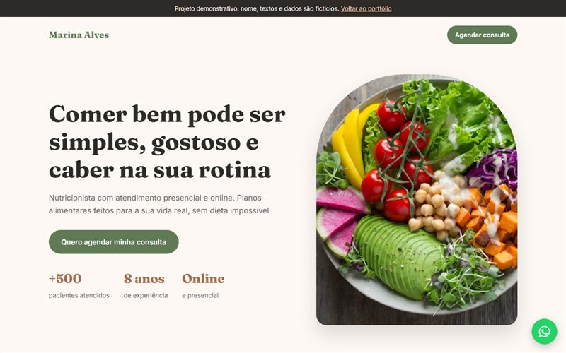
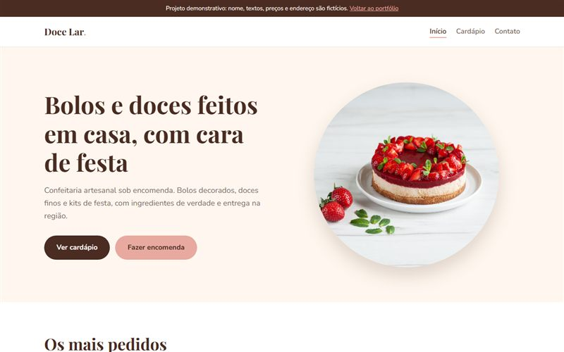

Landing pages
Uma página focada em apresentar seu serviço e levar o visitante direto para o seu WhatsApp.
Sites, sistemas e automações sob medida
Eu crio páginas e sistemas pensados para o jeito que você trabalha. Do site que traz clientes pelo WhatsApp à automação com inteligência artificial que tira o trabalho repetitivo do seu dia.
Uma página focada em apresentar seu serviço e levar o visitante direto para o seu WhatsApp.
Seu negócio completo na internet: quem você é, o que oferece, onde fica e como falar com você.
Venda online com catálogo, carrinho e pagamento, montada na plataforma certa para o seu volume.
CRM, cadastro de clientes, controle de pedidos: um sistema feito para o seu processo, não o contrário.
Robôs no WhatsApp, respostas automáticas, inteligência artificial para ler e organizar pedidos. Menos trabalho repetitivo no seu dia.
Seu site no ar, com backup, segurança e pequenos ajustes sempre que precisar.
Projeto real · roda todo dia
Robô que busca vagas sozinho em 10 sites, usa inteligência artificial para escolher só as que combinam com o perfil e avisa pelo WhatsApp. A mesma ideia serve para triar pedidos, orçamentos e contatos de clientes no seu negócio.
Projeto real · em produção
Robô que busca ofertas e publica sozinho num canal do WhatsApp, nos horários programados. Roda num servidor 24h, sem ninguém precisar apertar botão.

Projeto demonstrativo
Página para uma nutricionista: apresentação, serviços, depoimentos e agendamento direto pelo WhatsApp.
Ver página
Projeto demonstrativo
Site de uma confeitaria com várias páginas: início, cardápio com preços e contato com horário, endereço e encomenda pelo WhatsApp.
Ver siteSou desenvolvedor de software, formado em Análise e Desenvolvimento de Sistemas, e trabalho com tecnologia desde 2023. Já construí sistemas usados por milhares de pessoas todos os dias, com integrações de pagamento, inteligência artificial e automações que rodam sozinhas.
Agora levo essa experiência para pequenos negócios e profissionais autônomos: sites que trazem clientes e automações que tiram o trabalho repetitivo do seu dia. Atendimento direto comigo, do começo ao fim, sem intermediário.
Me conta o que você precisa. A conversa é sem compromisso.
Fale comigo no WhatsApp